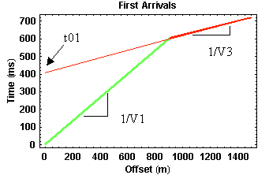
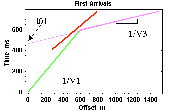

Hidden Layers
Can layers exist in the subsurface that are not observable from first arrival times? As you may have guessed from the wording used on the previous page, the answer is yes!! Layers that can not be distinguished from first arrival time information are known as hidden layers. There are two possible senerios that produce hidden layers.
- Low Velocity Layers - This is the most obvious cause of hidden layers. Consider the model shown below.
Because the velocity decreases downward across the first interface, no head wave is generated at this boundary (as was the case for the first model we considered). At the second interface, however, a head wave is generated that can be observed at sufficiently large offsets. Thus, our first arrival time observations will consist of direct arrivals at small offsets and head wave arrivals from the deeper interface at larger offsets. The first arrival travel-time curve generated from this model is shown below.
Notice that this travel-time curve is indistinguishable from the curves produced by a model containing a single interface. Hence, from this data alone you would be unable to detect the presence of the middle layer. Using the methodology described earlier, you would interpret the subsurface as consisting of a single layer with a velocity of 1500 m/s (from the slope of the travel-time curve for the direct arrival) underlain by a halfspace with a velocity of 5000 m/s (from the slope of the head wave travel-time curve). Using the value of t01 from the graph and the values of the velocities, you would guess that the thickness of the layer is 314 m!! You would be wrong.
- Thin, Large Velocity Constrast Layers - Another type of hidden layer is produced by media whose velocity greatly increases with a small change in depth. Consider the model shown below.
Notice that in this model there is a thin layer that is underlain by the halfspace, and the halfspace has a velocity much larger than the upper layer.
Unlike the previous example, head waves are produced at both interfaces just as described previously. Because the layer is thin and the velocity of the underlying medium is larger, however, the head wave coming from the top boundary is never observed as a first arrival!! It is overtaken by the rapidly traveling head wave coming from the bottom boundary before it can overtake the direct arrival. The travel-time curve you would observe is shown below.

-
The red line in the figure shows the travel times for the head wave coming
off of the top boundary. As described above, it is never observed as a first
arrival. Therefore, like before, you would interpret the first arrivals as
being generated from a subsurface structure that consists of a single layer
over a halfspace. Again, like before, you can correctly estimate the velocities
in the top layer and the halfspace, but because you missed the middle layer,
the depth you would compute from t01 to the top of the halfspace would
be incorrect.
In both of these cases, notice that the existence of the hidden layer can not be determined from the travel-time observations you are collecting. So, in practice you probably will never know that hidden layers existed under your survey. That is, until the client begins to excavate or drill!!
Seismology
- Simple Earth Model: Low-Velocity Layer Over a Halfspacepg 11
- Head Wavespg 12
- Records of Ground Motionpg 13
- Travel-time Curves for a Simple Earth Modelpg 14
- First Arrivalspg 15
- Determining Earth Structure from Travel Timespg 16
- Derivation of Travel Time Equationspg 17
- High-Velocity Layer Over a Halfspace: Reprisepg 18
- Picking Times of Arrivalspg 25
- Wave Propagation with Multiple Horizontal Layerspg 26
- Travel Time Curves from Multiple Horizontalpg 27
- Hidden Layerspg 28
- Head Waves from a Dipping Layer: Shooting Down Dippg 29
- Head Waves from a Dipping Layer: Shooting Up Dippg 30
- A Field Procedure for Recognizing Dipping Bedspg 31
- Estimating Dips and Depths from Travelpg 32